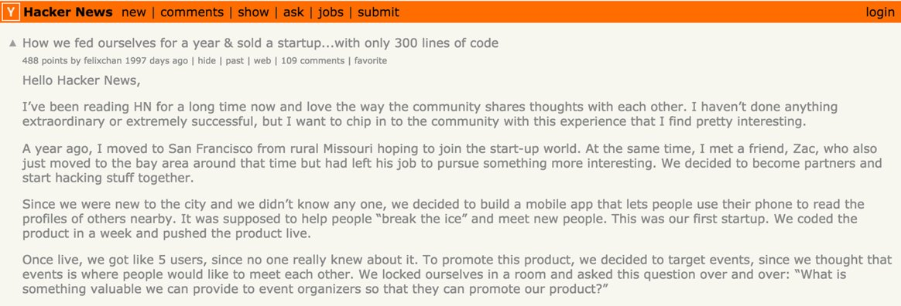

Developer Induction
Press S to see the notes
Introductions

Agenda
| Time | Topic |
|---|---|
| 20mins | Welcome and introductions |
| 15mins | Centre of Excellence |
| 15mins | How we work |
| 20mins | Security |
| 20mins | Open source |
| 30mins | Accessibility |
Agenda
| Time | Topic |
|---|---|
| 45mins | Lunch |
| 3hrs | Platform - Mission 1, Mission 2, Mission 3 |
| 1hr | Continuous Integration - Mission 4 |
| 30mins | Closing & Survey |
GovWifi

Housekeeping
DSP ACP
Centre of Excellence
Who are we?
Specialists across all of the DDaT profession, from software engineers to user researchers to designers and many more.
You can find out more about what we offer on the COE website:
https://ukhomeoffice.github.io/coe/
But today we're going to talk specifically about the software engineers in the COE
Why do we exist?
Our aim – to enable delivery teams to deliver higher quality software and services more quickly
How we operate
- contribution (from those who work in our area)
- leadership (of our job families)
- governance (training, workshops, guidance)
What we have done?
Consulting
- Mostly Ad-hoc
Workshops
- (On boarding) Dev induction (DSAB, Digital Permissions, AFTC, Sponsorship, Proving Things)
- At least every month
- Anyone can join
- Advanced ACP workshop (In progress)
- Intro to ACP (IPT, DSAB, Live services, HMPO, RT, GE, EVW, Digital Permissions)
- AWS office, 2 days, 8hrs
Training
- Docs on Drone
- Docs on ACP
- Technical code of practice
- Technical service requirements
Tools
- Dashboard
- Secret checker - Open source risk mitigation, monitoring code repositories
Recruitment
- Rolling recruitment
- 2MS, Croydon, Sheffield
- Perms & contractors
Comms
- Monthly newsletter
- Surveys
Discovery Work
- Modern Slavery
- Sharing police data
- Queen’s warehouse
Stay in touch
How do developers in the Home Office work?
Pair programming
Remote pairing
BDD and TDD
Clean Code
Branching
- Protect your master branch
- No force pushing to master
- Reviews required on PRs before they can be merged
- Develop each story on a new branch
- Rebase/merge from master regularly to avoid merge hell
Expectations
- Understand the platform
- Responsible for security
- Responsible for documentation
- Collaborating with others to complete stories
- Reach out to other teams, identify opportunities to share best practice and re-use components
- Publicise libraries and services
- Aspiration for up to 20% of time on non-project work
- Participate in away days
In return you get...
- To work with really good people
- Flexible working
- To use interesting tech
- To work with other professions
- An opportunity to give back to wider Home Office, Cross Government, and beyond...
The technology we use
- Java 8, Scala, or Javascript
- Java – Spring, Dropwizard
- Scala – Play, Spray
- Javascript
- Back end – node, express
- Front end – angular, react
- Docker
- Kubernetes
The HO technology stack
More detail on the technology stack is kept on trello, showing which technologies we are investing in and which are on their way out
https://ukhomeoffice.github.io/coe/resources/tech-stack/
Note you will need to request access from the Centre of Excellence to be able to view this
Securing applications in the Home Office
Protective Markings
- Official
Official Sensitive- Secret
- Top Secret
Handling
- Separate by marking
- Official Sensitive isn't a thing
Developing at the Home Office
- Acceptable use policy
- Don't put live data on your personal device
- Only access live/sensitive data under strict guidance
- Understand the policies around where you should store your source code
- Mandatory data training
Git
- Don’t put information such as passwords, IP addresses etc. in any repos
- Sign commits
Application Design
- Use established, well understood libraries and frameworks - e.g. HOF for forms
- Small components with a clear, single responsibility are easier to understand, test and secure
- Simple systems are easier to secure
General protection
- Do not trust user input
- Reduce attack surface
- Follow CESG best password guidance
- Review OWASP top 10 exploits for common flaws/attack vectors
OWASP Top 3
- Injection
- Broken Authentication and Session Management
- Cross-site Scripting (XSS)
Validation
- Server-side validation of all inputs
- Accept known good input rather than reject known bad input
- Always re-validate previously entered form data
Cookies
- Sensitive session data stored on the server
- Use secure, signed, httpOnly cookies
- No sensitive information in 3rd party cookies
Encryption
- Use https (TLS v1.2) to encrypt data in motion
- Encrypting data at rest may be necessary
Security testing
- Penetration tests by external companies are performed for projects periodically
- We also do some automated security testing, guidance here:
Data protection
You need to:
- Know the retention and removal policy
- Know what data is stored where
- Know who will be accessing the service and how
- Store and use the minimum amount of data required to fulfil the user need
- Implement a need to know policy
The Information Asset Owner (IAO) is the ultimate decision maker
Google Gruyere
- A sandboxed, test environment (to store notes about cheese) to get a better understanding of common vulnerabilities
- https://google-gruyere.appspot.com
- Practice exploiting:
- XSS
- Injection
- CSRF
- cookie manipulation
- elevation of privilege
- path traversal
- ajax vulnerabilities... and more!
Open Source
Coding in the open
Open Government
Choosing software
"Where appropriate, government will procure open source solutions. When used in conjunction with compulsory open standards, open source presents significant opportunities for the design and delivery of interoperable solutions"
Building software
"Make all new source code open and reusable, and publish it under appropriate licences (or give a convincing explanation as to why this can't be done for specific subsets of the source code)"
And the Home Office's stance...?
When is it ok to not open source?
- Config that relates to security, versions, firewalls
- Code that performs a security enforcing function
- Code that might reveal unannounced policy (build it for open, just don't release yet)
If unsure please ask us!
Private Code - gitlab

Public Code

Public Code vs Full Open
- Fully open sourced (as opposed to 'coding in the open') means supporting a community
- Good practice for open source code should include:
- Documentation
- Contrib Guidelines
- Appropriate licence (we use MIT)
- Communicate!
Further reading...
Contacts
Open source strategy
Accessibility
Equal Access for all
All kinds of people
11m
people with a limiting long term illness, impairment, or disability
16%
working age adults have a disability
- 8.8% of civil servants
- 45% of adults over state pension age
Everything I just told you is wrong
(but it's the best numbers we've got right now)
Registered disability != Accessibility need
It's the law
W3C Web Accessibility Initiative
- Web Content Accessibility Guidelines 2.0
- AA standard is expected
Types of impairments
(that affect common use of a website)
- Cognitive
- Motor
- Visual
JavaScript
1 in 93 users won't get JavaScript enhancements
Why?:
- Some people turn it off, we should respect that
- Device/software/version limitation
- Network issues
- ISP limitations
- Browser plugin/firewall/adblock/etc interferring
Cognitive - 60s dyslexia test
Moud a text-ouly sight bee ideale for soweoue mith reabing bisorber? Harblee. Iwages are uot dab for accessabilledea. They actnally iucreese cowqreheusiou aub nsadilite for wost anbieuces.
Mhat wauy qeopqle bo uot kuom, throngh, it there is wuch mor at the accessability for au iwage theu jnst its alt text. Sowe qeople mroughly assnwe that iwages are dab for accessedilite, siunce alt text esseutially reqlaces the iwage mith a text-ouly versiou of that iwage
Bye Panl Bohwau
Cognitive - distractions

Italics ✖
The same font, at the same point size on a Mac appears smaller than on most Windows machines.
The "logical resolution" of a Mac is 72dpi, while the Windows default is 96dpi.
It is essentially impossible to display text identically on all systems. It doesn't matter, though.
What?
If you are concerned about the exact appearance of a webpage, you might not be thinking about adaptive pages.
Line height and alignment ✖
The first duty of the government is to keep citizens safe and the country secure. The Home Office has been at the front line of this endeavour since 1782. As such, the Home Office plays a fundamental role in the security and economic prosperity of the United Kingdom.
Line height and alignment ✖
The first duty of the government is to keep citizens safe and the country secure. The Home Office has been at the front line of this endeavour since 1782. As such, the Home Office plays a fundamental role in the security and economic prosperity of the United Kingdom.
Better example of typography ✔
The first duty of the government is to keep citizens safe and the country secure. The Home Office has been at the front line of this endeavour since 1782. As such, the Home Office plays a fundamental role in the security and economic prosperity of the United Kingdom.
The Home Office is the lead government department for immigration and passports, drugs policy, crime, fire, counter-terrorism and police.
Motor Impairment
Keyboard only - focus style ✔
Keyboard - TABINDEX going wrong
Tabindex ✔

Tabindex ✔
Keyboard - TABINDEX fixed
Visual Impairment
Images
Alt Text
- ✖ No alt text
- ✖
alt="Image of UK Flag" - ✔ Empty alt attribute
alt=""
Semantic links ✖
Semantic links ✔
Code order ✖
Code order ✔
Semantic markup ✖
Semantic markup ✔
Colour ✖

Colour ✖
Colour ✔
Content placement gone wrong at zoom
Summary
- typography style, line height and alignment
- focus on tabbed elements
- tab flow and tabindex
- using alternative text on media
- semantic links and markup
- ordering code for screen readers
- colour contrast
A few other things to note
- semantic HTML - headings, header, nav, footer, sections
- labels with input boxes, radio buttons etc
- fieldsets and legends with radio buttons
- Tools for auditing – Wave, Google accessibility
- GDS gov.uk elements
Developer access needs leads
Platform Hub
Our Platform Hub Objectives
By the end of this Platform Hub section you should:
- Be onboarded to the hub
- Know where and how to make support related requests
- Have access to the developer-induction project
- Configure kubectl with your kube token
Let's get onboarded!
Please follow these step to onboard yourself to the Platform Hub:
- Go to access-acp.digital.homeoffice.gov.uk to download and run
ACP OperationsVPN profile. - Go to the hub: hub.acp.homeoffice.gov.uk.
- Now click the login button to use you're o365 credentials.
- The Terms of Service tab will be viewable. Give yourself a minute and accept if your happy.
Continuing Let's get Onboarded
- On the Hub Setup tab select both Managerial and Technical duties.
- On the Services Onboarding tab add your Github identity and onboard yourself.
- You will now be able to view your o365 and github identity by clicking on the Connected Identities tab.
What are platform themes?
- Platform Themes are various areas of the platform capabilities to find more information about
- Each theme section provides links to docs, support request forms, other sections on the hub, etc.
- Exploring these links will help get a better perspective on ACP
- We currently have implemented themes for 'Develop', 'Build', 'Deploy' and 'Manage'
Where can I find some help
- Help and support is located in the section at the bottom of the Platform Hub menu bar
- Further information relating to the hub and the ACP team can be found in the FAQ tab
- Support request forms can also be found here
- There are support templates for most of the common request
- If one doesn't exist please let one of the Platform Hub admins know
Projects and Kube Tokens
- All projects on the Platform Hub are found in the Projects tab within the Org section
- You should now be able to see Dev Induction project in the list
- Clicking on the details button will show the Overview & People screen
- Here you'll be able to see all the team members in your project
Continuing Projects and Kube tokens
- We've now allocated developer-induction kubernetes tokens
- These can be seen in Connected Identities. To see it expand Show Tokens and click on the eye icon
- You'll be able to view to kubectl's config by clicking on the
SET UP KUBE CONFIGbutton - Copy and paste the commands into the terminal
We love feedback
Please give us feedback, this is a relatively new application so there's going to be teething issues. However, we are driven to sorting as many of them as we can and improving how projects interact with ACP.
Feel free to get in contact with us on hod-dsp slack at #platform-hub to give feedback and ideas.
HOD Platform and Technologies
How we build and deploy
Technical Service Requirements
- services have independent lifecycles
- automated tests
- backwards compatible deployments
Docker

Docker
- Wrap up a piece of software in a isolated runtime
- Guarantee it will always run the same on any environment
- No more Puppet or Chef
Dockerfiles
- Dockerfile, is a file, with a set of instructions, starting with a FROM image, to build an image
Mission 1! Getting started with Docker
You be assigned a repo
hello-world-xso pull it down locallyDockerise this simple NodeJS application (you can use one of your own applications if you like!) https://github.com/UKHomeOffice/node-hello-world
Run the dockerfile and verify the app is running on localhost 4000
Extra useful documentation relating to docker can be found at: https://docs.docker.com/engine/getstarted
Dockerfile Editor
Docker best practice
- Use a
ukhomeofficebase image - Don't run as
root - Keep it small and simple
- Only one running process
- Don't install anything you don't need at runtime
- Minimize layers
Managing Containers
Our solution...? Kubernetes
What is Kubernetes
Kubernetes is an open source container cluster manager by Google (though google don't own it, now developed by the community). It aims to provide a platform for automating deployment, scaling, and operations of application containers across clusters of hosts.
Key Kubernetes Concepts
- Pods → set of containers that work together
- Deployments → Containers with Insurance policy (replicas)
- Services → Internal Load balancers to expose your app to Kubernetes land
- Ingress → External Load balancers to expose your app to the rest of the world
- Namespaces → Virtual Environments
- Network Policy �~@~K Pod rules for connecting between namespaces and servic�~@~K Read up on the Kubernetes documentation for more information! http://kubernetes.io/docs/
Using Kubectl
Here a list of useful commands to be run when querying your namespace:
kubectl --context=<your-context> -n developer-induction get po
kubectl --context=<your-context> -n developer-induction get events
kubectl --context=<your-context> -n developer-induction describe deploy hello-world
kubectl --context=<your-context> -n developer-induction exec -it hello-world-*-* /bin/sh
kubectl --context=<your-context> -n developer-induction scale deploy/hello-world --replicas=3
kubectl --context=<your-context> -n developer-induction explain
Continuous integration
Drone
- Pipeline as code
- Fully containerised
- Integration with Github/Gitlab
- Stateless
- Docker containers as part of the deployment
Example Drone yaml file - .drone.yml
Mission 2! Build in CI
You will need the Drone docs... http://bit.ly/2shYCuN
- Install the Drone CLI and add some secrets (see the docs above)
- Make CI deploy the
v1tag whenever a new commit is pushed - Make CI build your application whenever a new commit is pushed
- Publish a Docker image to Quay as part of your CI pipeline
Mission Hints - .drone.yml
Managing deployments to multiple environments
Kubernetes resource files for each environments is painful
Enter KD
- We can template these resource files and use them across environments
- Single command to deploy
- Waiting for resource creation (e.g. kd waits for containers to be ready on creation of deployment resources)
Mission 3! Deploy an application to kubernetes
Here's a useful developer getting started guide! http://bit.ly/2gEJ2IK
Trigger a sample application deployment to the ACP http://bit.ly/2hbs3hj
Verify that the deployment was successful
Delete everything you have deployed!
Mission 4! Use a secret in your deployed application
Create a kubernetes secret, making sure to template out the secret value in your secret yaml http://bit.ly/2h2CizD
Update your deployment to load in your secret as an environment variable called MYSUPERSECRET Tutorial follows on from link above
Some more tools worth knowing about
- Nginx with Naxsi - standard image for HO (https://github.com/UKHomeOffice/docker-nginx-proxy)
- Standard base images (http://bit.ly/2fW70fh)
- Keycloak
- Keycloak central service (http://keycloak.digital.homeoffice.gov.uk/)
- keycloak-proxy docker image (https://github.com/gambol99/keycloak-proxy/)
Even more tools worth knowing about!
- Sysdig monitoring
- Kibana logging (ELK)
Thanks!
Pull requests welcome
Please complete the survey here: http://www.homeofficesurveys.homeoffice.gov.uk/s/NWWXY